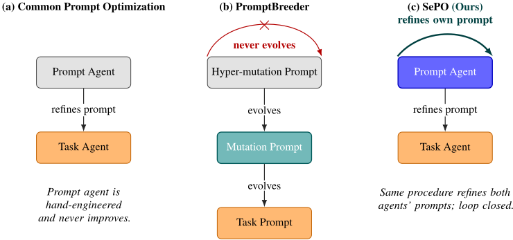
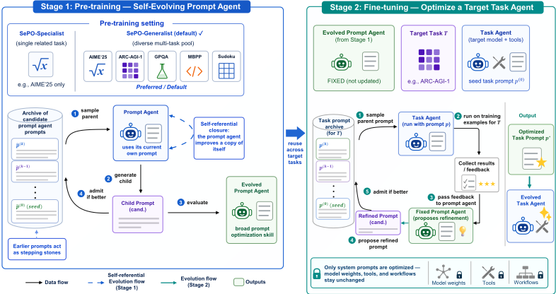
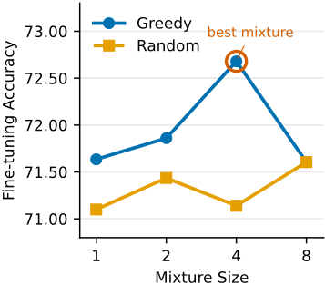
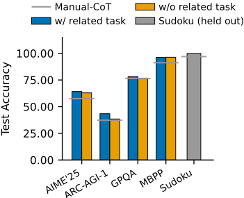

SePO：面向 System Prompt 优化的自进化 Prompt Agent
现有 system prompt 自动优化方法都依赖一个 prompt agent 读取评估反馈来改写 task agent 的提示词，但这个优化器自身的提示词始终人工编写且固定，优化上限被人工水平锁死。SePO 提出"自指闭环"设计：把 prompt agent 也当作特殊的 task agent，用同一套基于 archive 的开放式进化搜索同时优化任务提示词与优化器自身提示词，并模仿预训练/微调范式分两阶段——先在多任务池上进化出通用提示优化技能，再复用到目标任务。在 AIME'25、ARC-AGI-1、GPQA、MBPP、Sudoku 五个基准上，SePO 全面超过 Manual-CoT、TextGrad 与 MetaSPO，平均准确率提升 4.49 点；预训练学到的优化技能可泛化到预训练未见的任务（Sudoku 从 96.95 提至 99.90），单次预训练成本摊销后每任务仅约 $7.43 加微调费用。对团队而言，这提供了一条把人工提示词资产升级为"可自进化、可跨任务复用的优化技能"的工程路线。
现有 system prompt 优化方法引入一个 prompt agent 读取评估反馈、为 task agent 生成改进提示，但 prompt agent 自身的 system prompt 始终人工编写且固定：优化上限受限于人工能写出的水平，也无法随见过的任务增多而积累经验。论文要解决的是把 prompt agent 自身的提示词同样作为优化目标，闭合自指回路，把提示优化从固定工具变成可跨任务积累的技能。
核心是"自指闭环 + 开放式进化搜索 + 两阶段训练"。(1) 自指设计：把 prompt agent 视为一个特殊 task agent，定义 prompt task，其打分函数衡量改写后的提示是否比原提示提升 task agent 在任务池上的准确率，从而用同一套优化程序同时覆盖 task agent 的提示与 prompt agent 自身的提示。(2) 开放式进化搜索：维护候选提示 archive，子代按相对父代的 per-sample accuracy delta 打分，keep_better 准入策略（不低于父代即入档），父代按带自适应温度与子代数惩罚的 softmax 采样，让早期提示成为后续改进的 stepping stones。(3) 两阶段：预训练在多任务池上从种子进化 prompt agent 自身的 system prompt（SePO-Generalist 用 LLM judge 打分的贪心启发式选择任务混合，默认规模4：STEM+ARC-AGI-1+LIMO+MBPP；SePO-Specialist 仅用单任务）；微调复用进化得到的提示去优化目标任务 agent 的提示。评估反馈由16个样例组成、成功/失败约1:1且优先失败样例，超出 prompt agent 输入 token 预算时裁剪。
五个基准（AIME'25、ARC-AGI-1、GPQA、MBPP、Sudoku）上 SePO-Generalist 每个任务均取得最佳准确率，平均准确率从 Manual-CoT 的 71.89 提升至 76.38（+4.49 点）；TextGrad 平均 70.39、MetaSPO 平均 71.32，且两者各自在至少三个任务上低于 Manual-CoT
SePO-Specialist 在所有任务上也优于 Manual-CoT，但平均准确率比 SePO-Generalist 低 2.29 点，说明多任务预训练有贡献
贪心任务选择在混合规模小于8时全面优于随机选择，规模4差距最大（72.68 vs 71.14），最佳混合为 STEM+ARC-AGI-1+LIMO+MBPP
跨任务泛化：Sudoku 从未出现在任何预训练混合中，仍从 96.95（Manual-CoT）提升到 99.90；含相关预训练任务对 ARC-AGI-1 增益最大（+4.95 点），AIME'25 +1.30、GPQA +1.66
消融：去掉自改进平均 -1.44 点（ARC-AGI-1 受影响最大，-3.63）；把开放式进化换成线性搜索平均 -3.74 点（AIME'25 受影响最大，-6.98），两个组件均必要
换用 Gemini 3.1 Flash-Lite Preview（task agent）+ Claude Opus 4.6（prompt agent）后，SePO-Generalist 仍在所有任务上超过 Manual-CoT，平均 67.95 → 70.08（+2.13 点）
成本：TextGrad 每任务 $14.75-$26.52；SePO-Specialist 每任务 $5.72-$37.63；SePO-Generalist 将单次 $37.14 预训练摊销到五个任务（每任务约 $7.43）加微调 $2.41-$15.51，在所有任务上比 SePO-Specialist 便宜，并在五个任务中的三个上与 TextGrad 成本相当
相对已有工作：PromptBreeder 虽共同进化任务提示与 mutation 提示，但自指是有界的——hyper-mutation prompt 仍人工编写且从不被进化，且任务与 mutation 提示耦合、每任务重新初始化；TextGrad 的提示优化组件在优化过程中固定不变；MetaSPO 的 meta-optimizer 位于元学习循环之外且只产出单一全局提示。SePO 的区别在于把驱动搜索的 prompt agent 本身放进被搜索的种群中（operator 即优化目标），首次闭合自指回路，并以预训练/微调两阶段使提示优化成为可跨任务泛化、可摊销成本的"技能"，而非每任务重跑的固定工具。
相关度级别：high
命中能力域：3.2 提示工程 | 3.5 评测与可靠使用
理由：论文核心即 3.2 提示工程中的自动提示优化与提示词资产管理复用：它把 system prompt 优化本身做成可进化、可跨任务复用的"技能"，并给出 archive 版本管理与防回归（keep_better）机制，与团队"把模型用好而非训练模型"的定位完全一致。同时其优化循环完全由确定性评分函数与成功/失败样例评估批次驱动，预训练成本摊销设计（单次 $37.14 摊到五任务）也实质触及 3.5 的成本与效率优化及评测驱动的工作方式。论文不涉及 RAG/记忆、工具调用协议或多智能体协作，故不命中 3.1/3.3/3.4。
建议动作：深入精读并做内部分享
arXiv:2606.04465v1 [cs.CL] 2026年6月3日
新加坡国立大学 taowangcheng@u.nus.edu Han Wu ∗
香港城市大学 hanwu.cs@my.cityu.edu.hk
新加坡国立大学 wongwf@nus.edu.sg
系统提示优化（system prompt optimization）无需修改底层模型即可改进智能体（agent）行为，产生人类可读、与模型无关的指令。现有方法构建一个提示智能体（prompt agent）来改进任务智能体的系统提示，但提示智能体自身的系统提示仍由人工设计且固定不变。我们提出自进化提示优化（Self-Evolving Prompt Optimization, SePO），将提示智能体自身的系统提示与任务智能体的系统提示一同作为优化目标。SePO 采用自指式设计：单个提示智能体在一种开放式进化搜索下同时改进任务智能体的系统提示和其自身的系统提示，该搜索维护一个由候选提示组成的存档作为跳板。训练分两个阶段进行：预训练阶段在多任务池上对提示智能体进行进化，随后微调阶段将其应用于目标任务。在涵盖数学（AIME'25）、抽象推理（ARC-AGI-1）、研究生水平科学（GPQA）、代码生成（MBPP）和逻辑谜题（Sudoku）的五个基准测试（benchmark）上，SePO 始终优于 Manual-CoT、TextGrad 和 MetaSPO，与 Manual-CoT 相比将平均准确率提高了 4.49 个百分点。预训练所获得的提示优化技能还能泛化到预训练任务组合之外的任务，而不是死记硬背针对每个任务的提示。
智能体（Agent）如今已被广泛部署，用于在推理 [Yao et al., 2023]、编码 [Yang et al., 2024b] 和决策 [Wang et al., 2024] 等领域执行特定任务。智能体的性能可以通过重新训练其模型权重 [Ouyang et al., 2022]、增强其记忆 [Packer et al., 2023]、设计其工作流 [Hu et al., 2025, Khattab et al., 2024] 或优化其系统提示（system prompt）[Zhou et al., 2023, Yang et al., 2024a, Yuksekgonul et al., 2025, Choi et al., 2025] 来提升。我们聚焦于系统提示优化（system prompt optimization），它无需修改底层模型即可改善智能体行为，并能产生人类可读、与模型无关的指令。
系统提示优化的方法涵盖多条研究路线。早期工作将提示搜索建模为由评估反馈驱动的黑盒优化问题 [Zhou et al., 2023, Yang et al., 2024a]。随后的一系列工作在候选提示种群上运行进化搜索 [Fernando et al., 2024, Guo et al., 2024]。更近期的方法通过文本梯度框架反向传播自然语言批评 [Yuksekgonul et al., 2025]，并通过元学习得到
自引用是有界的；元栈顶是固定的。
∗ 通讯作者。
1 https://github.com/taowangcheng/SePO
预印本。

共享的跨任务提示 [Choi et al., 2025]。在上述方法中，提示智能体（prompt agent）读取评估反馈，并为任务智能体提出改进后的提示。提示智能体本身是人工设计的，不会随着所见任务的增多而改进。因此，提示优化受限于人类所能手工设计的范围，无法从积累的经验中获益。
根本问题在于，只有任务 Agent 的提示被视为优化目标，而提示 Agent 本身却保持固定。我们通过一种自指设计来弥合这一差距。提示 Agent 将自身视为一个特殊的任务 Agent，因此用于改进任何任务 Agent 提示的同一流程也会改进其自身的提示。图 1 将 SePO 的自指设计与先前的提示优化方法进行了对比。受 Zhang et al. [2026] 启发，该流程在候选提示种群上以开放式演化的方式运行。存档使得较早的提示能够充当后续改进的垫脚石。我们将这一框架称为自演化提示优化（SePO）。同一流程现在同时覆盖两个层次，从而无需为提示 Agent 手工设计单独的优化器。仿照标准的预训练与微调范式，我们将该流程组织为两个阶段。第一阶段，即提示 Agent 的“预训练”，在一个任务池上运行自指循环，演化出一个在各种场景下均具备通用能力的强大提示 Agent。第二阶段称为在特定任务上的“微调”，利用该提示 Agent 来改进目标任务 Agent 的提示。这种划分将自演化提示 Agent 的成本分摊到众多微调任务上。多任务预训练还借鉴了这样一条标准原则：多样化的训练数据能够同时提升鲁棒性与泛化能力。自指设计与两阶段训练流水线相结合，将提示优化从一种固定的工具转变为一种可跨任务积累的可学习技能。
我们在五个基准测试（benchmark）上对 SePO 进行评估，涵盖数学（AIME'25）、抽象推理（ARC-AGI-1）、研究生水平科学（GPQA）、代码生成（MBPP）和逻辑谜题（Sudoku）。与三个提示优化基线（Manual-CoT、TextGrad、MetaSPO）相比，SePO 在每个任务上都取得了最佳准确率，与 Manual-CoT 相比将平均准确率提高了 4.49 个百分点。将训练划分为预训练和微调两个阶段还带来了清晰的关注点分离。预训练在多任务池上运行一次，随后所得的提示 Agent 在微调期间可被各个不同的任务 Agent 复用。预训练所获得的提示优化技能还能扩展到预训练任务组合之外的任务，而不是针对每个任务死记硬背。
提示优化 自思维链（chain-of-thought, CoT）提示 [Wei et al., 2022] 证明简单的结构性线索能够显著提升 Agent 的推理能力以来，提示优化受到了广泛关注。这些线索最初由人工手工设计，这一劳动密集型的过程推动了后续自动化提示优化工作的开展。早期的黑盒方法将提示搜索视为一个由 Agent 驱动的优化问题，该 Agent 读取评估反馈并提出改进后的提示 [Zhou et al., 2023, Yang et al., 2024a]。当优质提示较为稀疏时，这种方法便难以奏效，由此催生了维护候选提示种群并施加变异与选择的进化方法 [Fernando et al., 2024, Guo et al., 2024]。另一条独立的研究路线则借助成熟的机器学习范式来处理提示优化，从而超越了启发式搜索。文本梯度（textual-gradient）框架 [Yuksekgonul et al., 2025] 通过 Agent 计算图传播自然语言批评意见，提供的是组件级别的反馈，而非种群级别的适应度。元学习 [Choi et al., 2025] 则生成一个跨任务共享的提示，将优化过程泛化到不同任务之上。在上述方法中，PromptBreeder 是与 SePO 最接近的先行工作。它让任务提示与生成这些任务提示的变异提示协同进化，这是自指式提示进化的一种早期形式。然而，这种自指是有边界的。一个手写的超变异（hyper-mutation）提示负责进化变异提示，而其自身从不被进化。因此，该元栈的顶层是一个固定的人工设计组件，循环从未闭合（图 1b）。此外，每次进化运行都是任务特定的，因为任务提示与变异提示被耦合为一个单元，并针对每个任务重新初始化。MetaSPO 与我们的问题设定最为直接契合，它将提示优化表述为跨任务元学习。然而，元优化器本身仍然是手写的，处于元学习循环之外。纵观上述方法，驱动搜索的提示 Agent 本身都是人工设计的，并且不会随着所见任务的增多而改进。为解决这一问题，SePO 将提示 Agent 视为一个特殊的任务 Agent，从而使同一流程能够同时精炼这两种提示。一个存档（archive）机制让较早的提示能够作为后续改进的垫脚石。预训练阶段在多样化的多任务池上运行搜索，随后微调阶段将所得的提示 Agent 复用于各种任务。
自进化 Agent 自进化 Agent 可以根据其修改的对象以及修改所处的阶段进行分类 [Gao et al., 2026a]。最早的自改进方法仅修改 Agent 的输出。Self-Refine [Madaan et al., 2023] 和 Reflexion [Shinn et al., 2023] 让 Agent 对自身的输出生成结构化的自然语言批评，并将其融入后续的尝试中。Voyager [Wang et al., 2024] 超越了逐输出修订的范畴，在开放式的 Minecraft 环境中积累了一个可跨回合（episode）使用的技能库。最近，研究工作已转向 Agent 的代码与架构，而非其输出。基于存档的编码 Agent 进化搜索 [Zhang et al., 2026] 维护一个由 Agent 变体组成的种群，并在固定的基准测试（benchmark）上对其进行评估。这在 Schmidhuber [2003] 最初提出的 Gödel Machine 的基础上实现了开放式的自改进。ADAS [Hu et al., 2025] 同样对 Agent 的系统代码进行进化，由一个固定的元 Agent 生成候选设计。在这一脉络中，SePO 仅作用于提示 Agent 的自然语言系统提示（system prompt），而不改动代码、权重和工具。与 Agent 输出、积累的技能或 Agent 架构相比，系统提示更具可解释性，且与模型无关。
对非 Agent 工件的进化搜索 另一条平行的研究路线对本身并非 Agent 的工件进行进化搜索。FunSearch [Romera-Paredes et al., 2024] 对能产生数学对象的程序进行进化，取得了新的组合界。Eureka [Ma et al., 2024] 将这一模板扩展到强化学习，通过 Agent 提出的代码来改进奖励函数。AlphaEvolve [Novikov et al., 2025] 则将同一思想扩展到解决科学与工程问题的算法上。在这些系统中，驱动搜索的 Agent 是一个固定的外部操作者，与被进化的工件相互分离。相比之下，SePO 将提示 Agent 自身置于其所搜索的种群之中，因此操作者本身也是优化的目标。
我们首先对任务与 Agent 的概念进行形式化，然后阐述针对任务 Agent 的系统提示优化这一标准问题。随后，我们将提示 Agent 自身的系统提示映射到同一问题上，并提出 SePO，该方法在贯穿两个训练阶段的单一流程中同时优化这两个提示。

我们采用与 p 相同的方式，将 ˜ p 视为一个优化变量。为此，我们定义一个提示任务 ˜ T = ( ˜ D , ˜ S )。˜ D 收集如第 3.1 节所定义的提示 Agent 输入 ˜ x = ( T, A, E )，其中 T 是一个任务池。评分函数 ˜ S 衡量精炼后的提示 p ′ 在 T 上是否比 p 提升了任务 Agent 的准确率。有了提示任务之后，提示 Agent 系统提示的优化便变为
式 (2) 本质上就是式 (1)，只是换了一组不同的待优化参数，用以优化某个 Agent 的系统提示，从而最大化其在任务上的准确率。因此，同一流程对两者均适用：改进任务 Agent 在 T 上的 p，以及提示 Agent 在 ˜ T 上的 ˜ p。我们将这称为自指闭环：提示 Agent 将自身视为一个特殊的任务 Agent，其任务是改进任务 Agent 的提示。
自进化提示优化（Self-Evolving Prompt Optimization, SePO）通过在两个训练阶段应用同一搜索算法，将式 (1) 与式 (2) 所描述的优化加以实例化。该搜索是一种在候选提示种群上进行的开放式进化，其灵感来自 Zhang et al. [2026]。它维护一个候选存档，并接纳优于其父代的子代。该存档使早期提示能够作为后续改进的垫脚石。实现细节请参见附录 A。
两阶段训练流程 图 2 给出了该流程的概览。我们分两个阶段训练 SePO，仿照标准的预训练与微调范式。两个阶段共用算法 1，区别仅在于以哪个 Agent 的系统提示作为优化目标。预训练首先使提示 Agent 在众多任务上具备广泛的提示优化技能。它在提示任务 ˜ T 上将提示 Agent 自身的系统提示从种子 ˜ p (0) 进化到 ˜ p ⋆。自指闭环在此处生效：每个 generate 步骤中的父代 ˜ p 本身就是提示 Agent 的系统提示，因此该 Agent 是在改进自身的一个副本。微调随后应用该提示 Agent 去优化任务 Agent 在目标任务上的提示。它在单个任务 T 上将任务 Agent 的系统提示从 p (0) 进化到 p ⋆。在微调期间，提示 Agent 全程使用 ˜ p ⋆ 作为其系统提示。总体而言，这一两阶段训练流程将单次预训练运行摊销到多个微调任务上。提示 Agent 从多任务池中积累广泛的提示优化技能，从而支持跨任务泛化。
SePO-Specialist 与 SePO-Generalist SePO 的两种配置仅在预训练期间提示 Agent 所接触的任务上有所不同。SePO-Specialist 使用单个任务，即与后续微调所针对的相同任务。SePO-Generalist 使用多个任务的混合，借鉴了标准的预训练范式——在该范式中，多样化的训练数据能够同时提升鲁棒性与泛化能力。单次预训练运行还可以在多个微调任务之间复用，而 SePO-Specialist 则必须为每个任务单独运行预训练。SePO-Generalist 是我们的默认配置，而 SePO-Specialist 是单任务变体。
SePO-Generalist 的任务选择 SePO-Generalist 需要选择将哪些任务纳入其预训练混合中。多任务提示优化正是针对这一问题，相关方法包括动态任务分组 [Zhang et al., 2025]、元学习任务选择 [Choi et al., 2025] 以及高方差子集选择 [Gao et al., 2026b]。由于这并非 SePO 的关注重点，我们采用一种贪心启发式方法（附录 B）。更先进的任务选择算法可以替换我们的启发式方法，而不会影响 SePO 的其余部分。
我们在五个任务上将 SePO 与三种提示优化基线方法进行对比评估。第 4.1 节介绍任务、基线方法、我们的两种 SePO 配置以及实现细节。第 4.2 节报告主要结果，验证多任务选择启发式方法，对 SePO 的各组件进行消融实验，探究跨任务泛化能力以及跨模型对的鲁棒性，比较各方法之间的训练成本，并对演化得到的提示进行定性分析。
任务 我们的评估套件涵盖五项具有不同技能特征的任务：数学、抽象视觉推理、研究生水平科学、代码合成以及组合谜题。每项任务均按照第 3.1 节的定义，由一个数据集 D 和一个评分函数 S 来定义。AIME'25 [OpenCompass Contributors, 2025] 提供答案为 [0, 999] 范围内整数的高中奥林匹克数学问题。我们从任务 Agent 的回答中提取方框标注的整数，并将其与标准整数进行核对。ARC-AGI1 [Chollet, 2019] 通过网格到网格的变换谜题测试抽象视觉推理。我们将每个预测的输出网格与参考网格进行比较。GPQA [Rein et al., 2024] 涵盖物理、化学和生物学领域的研究生水平多项选择科学问题。我们将预测的答案选项字母与标准答案进行比对。MBPP [Austin et al., 2021] 要求根据文档字符串（docstring）合成 Python 程序，并对照隐藏的单元测试进行检验。我们针对这些测试运行预测的程序，并按功能正确性进行评分。Sudoku [Zhao et al., 2025] 提供 4 × 4 数独谜题。我们使用一个数独验证器对预测网格进行评分，该验证器会检查行、列和子网格约束。我们按照官方规程报告 ARC-AGI-1 的 pass@3 准确率，并报告其余四项任务的 pass@1 准确率。我们将每个 D 划分为用于提示优化的训练集和用于第 4.2 节最终评估的测试集。为了获得更准确的估计，我们对每个测试问题进行多次评估并报告平均准确率。更多任务细节见附录 C。
基线方法 我们将 SePO 与三种基线方法进行比较，这些方法涵盖了从无自动优化到近期元学习方法的整个范围。Manual-CoT 是一种无优化基线，它使用一个手工制作的系统提示，其中包含思维链（CoT）风格的任务处理指导（"think step by step"）。该基线用于分离任何自动提示优化所带来的贡献。TextGrad [Yuksekgonul et al., 2025] 是一个文本梯度框架，它在由 Agent 调用构成的 autograd 图上反向传播自然语言批评。我们对官方实现进行了适配，使其使用我们的模型注册表和逐任务评估框架（evaluation harness）。TextGrad 中的提示优化组件是人工设计且在整个优化过程中保持固定的，这与 SePO 中的自演化提示 Agent 形成对比。MetaSPO [Choi et al., 2025] 通过交替进行外层循环的系统提示优化与内层循环的用户提示细化，元学习得到一个跨任务的全局系统提示。我们使用作者发布的全局提示，并在评估前附加针对每项任务的描述和答案格式约束。我们与 MetaSPO 进行比较，因为它是现有最强的跨任务系统提示基线，且以与 SePO-Generalist 相同的跨任务泛化为目标。该元优化器同样是人工编写的，并不属于元学习循环的一部分。
我们的方法 SePO 在两个训练阶段运行开放式演化搜索，同时优化提示 Agent 的系统提示和任务 Agent 的系统提示。预训练和微调均仅使用每个任务的训练集划分。我们评估了第 3.3 节中介绍的 SePO 的两种配置。SePO-Specialist 在后续微调所针对的同一单个任务上进行预训练。SePO-Generalist 在由贪心启发式方法选出的多任务混合上进行预训练。由此得到的提示 Agent 随后在所有微调任务中复用。SePO-Generalist 是我们的默认配置，而 SePO-Specialist 则用于隔离多任务预训练的贡献。
6
| Method | AIME'25 | ARC-AGI-1 | GPQA | MBPP | Sudoku | Avg. |
|---|---|---|---|---|---|---|
| Manual-CoT | 57.55 | 37.3 | 76.46 | 91.2 | 96.95 | 71.89 |
| TextGrad | 55.99 | 34.75 | 74.44 | 90.15 | 96.6 | 70.39 |
| MetaSPO | 57.71 | 37.27 | 75.51 | 89.3 | 96.8 | 71.32 |
| SePO-Specialist | 60.94 | 37.46 | 76.72 | 95.55 | 99.8 | 74.09 |
| SePO-Generalist | 64.22 | 43.39 | 78.18 | 96.2 | 99.9 | 76.38 |
| Method | AIME'25 | ARC-AGI-1 | GPQA | MBPP | Sudoku | Avg. |
实现细节 在所有方法中，我们均使用 DeepSeek-V3.2 [DeepSeek-AI, 2025] 和 Gemini 3.1 Pro Preview [Google DeepMind, 2026b] 分别作为任务 Agent 和提示 Agent 的底层模型。我们对任务 Agent 使用温度 0，以保持其响应的确定性和评估的准确性。对于提示 Agent，我们使用温度 1，以在提示优化过程中鼓励生成多样化的候选提示。TextGrad 和 SePO 共享相同的优化预算，即 10 次迭代、每次迭代 16 个样本。在预训练和微调阶段，SePO 均运行 G =5 代、每代 K =2 个子代。每个子代针对一批以 ∼ 1:1 比例混合的失败与成功任务样本进行评估。所有报告的结果均在 5 次采用不同随机种子的独立运行上取平均。各方法各自的实现细节，包括每个基线方法对我们评估框架的适配，见附录 D。
主要结果 我们首先报告 SePO 在五个评估任务上相对于三个提示优化基线的性能。表 1 显示，SePO-Generalist 在每个任务上都取得了最佳准确率，将平均准确率从 71.89（Manual-CoT）提升至 76.38。SePO-Specialist 在每个任务上也优于 Manual-CoT，但其平均准确率比 SePO-Generalist 低 2.29 个百分点。TextGrad 和 MetaSPO 各自至少在三个任务上低于 Manual-CoT，平均准确率分别为 70.39 和 71.32。TextGrad 的提示优化组件是手工设计的，且在整个优化过程中保持固定，因此无法随搜索的推进而自适应调整。MetaSPO 继承了同样的固定优化器局限，并且还通过元学习得到一个单一的跨任务全局系统提示，而这一产物无法匹配各任务各自的推理需求。SePO 则在两个训练阶段中演化提示 Agent 本身。因此，跨任务泛化能力来自提示优化技能，而非手工编写的优化器或记忆下来的全局提示。这些结果表明，提示 Agent 的自我改进将性能上限提升到了仅靠手工编写的提示优化方法所能达到的水平之上。
SePO-Generalist 的任务选择 多任务提示优化 [Zhang et al., 2025, Choi et al., 2025, Gao et al., 2026b] 表明，任务混合的构成会在微调过程中塑造提示 Agent 的优化技能。在五个评估任务中，AIME'25 和 ARCAGI-1 是最难且最专门化的，因此比其他任务需要更精准的提示优化。我们根据在 AIME'25 和 ARC-AGI-1 训练集划分上的平均微调准确率来为每个候选混合评分。图 3 在四种混合规模下将我们的贪心任务选择器（第 3.3 节）与随机选择器进行了比较。在所有小于 8 的规模下，贪心选择器都优于随机选择器，其中规模为 4 时差距最大（72.68 对 71.14）。在规模为 8 时，两种选择器都必然返回全部八个任务的完整池。规模 4 也符合直觉。更小的池会遗漏具有互补性的任务，而规模 8 则会因混入对齐程度较低的任务而稀释评分信号。更大的混合也会使提示 Agent 更难在所有成员任务上巩固单一的优化技能。贪心选择器相对随机选择器的一致优势验证了第 3.3 节中引入的启发式方法。更先进的多任务选择算法 [Zhang et al., 2025, Gao et al., 2026b] 可以在此处接入以获得进一步提升，而无需改动 SePO 的其余部分。除非另有说明，我们报告的 SePO-Generalist 结果均采用规模为 4 的贪心混合 STEM+ARC-AGI-1+LIMO+MBPP。
7


跨任务泛化 我们测试预训练所获得的提示优化技能能否泛化到预训练混合数据之外的任务。对于每个评估任务，图 4 比较了两种预训练设置：预训练混合数据中包含相关任务与不包含相关任务。例如，AIME'25 与 STEM 和 LIMO 相关，因为三者都涉及数学知识。在每个任务上，即使是不相关的混合数据也仍然优于 Manual-CoT。差距最大的是 ARC-AGI-1（+4.95 分），它是我们测试套件中专门化程度最高的任务，相关预训练任务在此帮助最大。其余任务的差距要小得多：AIME'25 上为 +1.30 分，GPQA 上为 +1.66 分，而 MBPP 的准确率在两种设置下相当。在这些任务上，来自预训练的通用提示优化技能已经贡献了大部分增益。然而，更有趣的是，Sudoku 从未出现在任何预训练混合数据中，而 SePO-Generalist 仍将其从 96.95（Manual-CoT）提升至 99.90。这与 Sudoku 相对较低的专门化程度相符。仅凭通用提示优化技能，无需任何相关预训练数据，就足以大幅提升 Sudoku 的准确率。总体而言，这些结果凸显了 SePO 的跨任务泛化能力。预训练阶段学到的是可泛化的提示优化技能，而非记忆针对每个任务的提示。
SePO 变体 回顾一下，SePO 将提示智能体的自我改进与开放式进化相结合。为验证每个组件都是必要的，我们考虑了两个变体。SePO w/o self-improvement 完全跳过预训练，因此提示智能体在微调期间使用其手写的种子。SePO w/o open-ended evolution 则将基于存档的搜索替换为总是选取最新候选的线性搜索。在表 2 中，两个变体的平均表现均不及 SePO-Generalist（分别为 -1.44 分和 -3.74 分）。每个变体受影响最大的任务各不相同。w/o self-improvement 对 ARC-AGI-1 的损害最大（-3.63 分），而 w/o open-ended evolution 使 AIME'25 下降最多（-6.98 分）。因此，这两个组件对 SePO 而言都不可或缺。自我改进强化了提示智能体本身，而开放式进化则让搜索能够摆脱线性搜索无法逃出的局部最优。
不同模型下的分析 迄今为止的实验均使用 DeepSeek-V3.2 和 Gemini 3.1 Pro Preview 分别作为任务智能体和提示智能体的底层模型。为了研究这一增益是否能推广到其他模型组合，我们更换了底层模型。具体而言，我们分别使用 Gemini 3.1 Flash-Lite Preview [Google DeepMind, 2026a] 和 Claude Opus 4.6 [Anthropic, 2026] 作为任务智能体和提示智能体。在重新运行全部五个任务后，SePO-Generalist 在表 3 的每个任务上再次优于 Manual-CoT。平均准确率从 67.95 提升至 70.08，增益为 +2.13 分。因此，SePO 能够泛化到多种模型，而不仅限于默认的模型组合。
| Method | AIME'25 | ARC-AGI-1 | GPQA | MBPP | Sudoku | Avg. |
|---|---|---|---|---|---|---|
| Manual-CoT | 57.55 | 37.3 | 76.46 | 91.2 | 96.95 | 71.89 |
| SePO-Generalist | 64.22 | 43.39 | 78.18 | 96.2 | 99.9 | 76.38 |
| w/o Self-Improvement | 62.81 | 39.76 | 76.21 | 95.95 | 99.95 | 74.94 |
| w/o Open-Ended Evolution | 57.24 | 41.58 | 73.74 | 91.1 | 99.55 | 72.64 |
| Method | AIME'25 | ARC-AGI-1 | GPQA | MBPP | Sudoku | Avg. |
| Method | AIME'25 | ARC-AGI-1 | GPQA | MBPP | Sudoku | Avg. |
|---|---|---|---|---|---|---|
| Manual-CoT | 44.53 | 30.01 | 75.66 | 90.45 | 99.10 | 67.95 |
| SePO-Generalist | 45.89 | 32.70 | 77.17 | 95.00 | 99.65 | 70.08 |
| ∆ | +1 . 36 | +2 . 69 | +1 . 51 | +4 . 55 | +0 . 55 | +2 . 13 |
| Method | AIME'25 | ARC-AGI-1 | GPQA | MBPP | Sudoku | Avg. |
成本 我们在表 6 和表 7 中比较了 TextGrad、SePO-Specialist 与 SePO-Generalist 的每任务训练成本，完整的各阶段 token 计数见附录 G。TextGrad 在单个训练阶段中每个任务花费 14.75–26.52 美元，而 SePO-Specialist 在预训练与微调合计后每个任务花费 5.72–37.63 美元，两者规模相当。SePO-Generalist 则将单次 37.14 美元的预训练运行摊销到全部五个任务上，从而将每任务平均值降至 7.43 美元（预训练，摊销后）加上 2.41–15.51 美元（微调）。这使得 SePO-Generalist 在每个任务上都比 SePO-Specialist 更便宜，在五个任务中的三个上与 TextGrad 相当，同时在准确率上优于两者（表 1）。在各个阶段和各个方法中，提示 Agent 仅占 token 总量的一小部分；它消费的是经过摘要的失败案例，并输出简短的候选提示，因此任务 Agent 在训练集与测试集划分上执行的评估轮次占据了成本的主要部分。这些训练成本在部署前仅需支付一次，而查询时的推理成本在所有方法中完全相同，因为每种方法都在相同的每查询预算下运行相同的任务 Agent。
定性结果 我们在附录 E 和附录 F 中对比了提示 Agent 与五个任务 Agent 的种子提示和最佳演化提示。演化后的提示 Agent 提示通过五条防御性原则扩展了种子工作流，这些原则用于防范思维链（CoT）截断、牺牲严谨性以及对特定测试用例的过拟合。演化后的任务 Agent 提示在各任务之间共享一种共同模式。每个提示都保留了来自种子提示的角色设定与答案格式，然后添加了针对该任务特有失效模式的多步骤程序化工作流。例如，MBPP 提示阻止了 max / min 上的全局命名空间冲突，Sudoku 提示针对分词器导致的字符丢失进行验证，而 ARC-AGI-1 提示则强制执行坐标转录规则。这种针对具体任务的脚手架式改造，而非对种子提示的全面重写，遵循了与提示 Agent 对自身所采用的相同的“保留有效部分”原则。
在本文中，我们填补了系统提示优化领域的一个空白。现有方法将提示 Agent 自身的系统提示留作人工设计且固定不变。为解决这一问题，我们提出了自进化提示优化（Self-Evolving Prompt Optimization, SePO），它采用自指式设计。提示 Agent 在其应用于任务 Agent 的同一流程下改进自身的系统提示。这将提示 Agent 从一个人工设计的固定装置转变为一个随经验积累而不断增强的可学习组件。SePO 的训练分为两个阶段：预训练阶段在多任务池上进化提示 Agent，随后微调阶段将其应用于每个目标任务。这种划分将预训练成本分摊到众多应用中，同时积累广泛的提示优化技能以实现跨任务泛化。在涵盖数学、抽象推理、研究生水平科学、代码生成和逻辑谜题的五项任务上，SePO 持续优于 Manual-CoT、TextGrad 和 MetaSPO，与 Manual-CoT 相比将平均准确率提升了 4.49 个百分点。除系统提示之外，同样的自指式设计和两阶段训练流程在原则上还可以改进 Agent 的工具、工作流以及更广泛的脚手架。我们希望 SePO 能激励更多关于自进化 Agent 的后续研究，使其能够持续拓宽自身可改进内容的范围。
9
SePO 采用 Zhang 等人 [2026] 的开放式进化搜索作为其底层流程（算法 1）。本节详细介绍父代选择的 softmax、评分函数以及档案准入策略。
父代选择 父代按照经温度调节、带子代数量惩罚的 softmax 从档案中按比例采样：
其中 s_a 是 a 的得分，c_a 是 a 已产生的子代数量，τ 是自适应温度。当得分较为分散时，温度会使利用更加集中；子代数量惩罚将计算资源重新导向探索较少的踏脚石；所有候选者都保持非零的被选中概率。
评分 子代按照相对于其父代的逐样本准确率差值进行评分，
其中 acc_old 是父代的准确率，acc_new 是子代的准确率，两者均在同一评估批次上测得。
档案准入 子代在 keep_better 策略下被准入：如果其得分在评估噪声容限 ϵ 内达到或超过父代得分，则加入档案；否则被丢弃。
我们为第 4.1 节中介绍的每个任务构建数据集 D，各数据划分的规模汇总于表 4。对于每个任务，预训练和微调使用训练集划分，评估使用测试集划分。
AIME'25 测试集划分即官方 AIME'25 基准测试 [OpenCompass Contributors, 2025]。训练集划分是 simplescaling/s1K-1.1 [Muennighoff et al., 2025] 的一个过滤子集，仅保留带有已验证解答的条目。
ARC-AGI-1 我们直接使用 ARC-AGI-1 发布版本 [Chollet, 2019] 中的训练集划分和测试集划分，不做进一步过滤。
GPQA 测试集划分即 GPQA 基准测试 [Rein et al., 2024]。训练集划分是 MMLU 训练集划分 [Hendrycks et al., 2021] 的 STEM 子集。由于 GPQA 仅提供测试集划分，我们将其用作代理训练池。
MBPP 我们直接使用 MBPP 的训练集划分和测试集划分 [Austin et al., 2021]。
Sudoku 我们采用 Zhao et al. [2025] 的训练集划分和测试集划分，并对训练集划分进行随机子采样。
仅训练任务池 SePO-Generalist 的多任务预训练池额外使用了四个仅含训练集划分的数据集（LIMO、Humanities、Social Sciences 和 Other；见下文）。这些数据集仅提供训练样本，绝不会出现在第 4.2 节所报告的评估中。
LIMO 我们使用 GAIR/LIMO-v2 [Ye et al., 2025] 的一个随机子集，这是一个小规模的高质量数学推理数据集。
Humanities 我们使用 MMLU 训练集划分 [Hendrycks et al., 2021] 的 humanities 子集。
Social Sciences 我们使用 MMLU 训练集划分 [Hendrycks et al., 2021] 的 social_sciences 子集。
Other 我们使用 MMLU 训练集划分 [Hendrycks et al., 2021] 的 other 子集。
14
重复次数 对于测试集划分中的每个问题，我们对任务 Agent 运行 N 次独立重复，并按照该任务的指标进行聚合。AIME'25 使用 N = 64，ARC-AGI-1 和 GPQA 使用 N = 10，Sudoku 使用 N = 5，MBPP 使用 N = 4。ARC-AGI-1 遵循官方协议，在其 N = 10 次重复上报告 pass@3；其余四个任务报告在其 N 次重复上取平均的 pass@1。
| Task | Train Split | Test Split | Metric |
|---|---|---|---|
| AIME'25 | 535 | 30 | pass@1 |
| ARC-AGI-1 | 416 | 419 | pass@3 |
| GPQA | N/A | 198 | pass@1 |
| MBPP | 474 | 500 | pass@1 |
| Sudoku | 440 | 100 | pass@1 |
| SePO-Generalist train-only task pool: | SePO-Generalist train-only task pool: | SePO-Generalist train-only task pool: | SePO-Generalist train-only task pool: |
| LIMO | 800 | N/A | pass@1 |
| Humanities (MMLU) | 518 | N/A | pass@1 |
| Social Sciences (MMLU) | 337 | N/A | pass@1 |
| Other (MMLU) | 355 | N/A | pass@1 |
| STEM (MMLU) | 321 | N/A | pass@1 |
| Task | Train Split | Test Split | Metric |
We expand on the per-method setups summarized in Section 4.1. Table 5 summarizes the full hyperparameter set used in all reported experiments unless explicitly noted in Section 4.1.
Manual-CoT The hand-crafted system prompt is task-specific. It instructs the task agent to think step by step and conform to the answer format expected by the scorer. For example, the AIME'25 prompt asks the agent to put its final answer inside \boxed{} . The ARC-AGI-1 prompt asks the agent to wrap its answer in <ANSWER></ANSWER> tags. The Manual-CoT prompt is also the seed p (0) from which TextGrad and SePO begin optimization during fine-tuning, so all methods start from the same point.
TextGrad We adapt the official TextGrad implementation to our model registry and per-task evaluation harness. TextGrad optimizes the task agent's system prompt only. The forward execution model is the task agent (DeepSeek-V3.2); the backward natural language gradient model is the prompt agent (Gemini 3.1 Pro Preview). The optimizer runs five epochs with two gradient descent steps per epoch, totaling ten iterations under the shared budget. We revert to the previous prompt when validation accuracy regresses.
MetaSPO We do not run MetaSPO's meta-learning procedure ourselves. We use the global system prompt that the authors publish as the output of their meta-learning stage. Before evaluation, we append per-task descriptions and answer format constraints to it, yielding a composed prompt of the form <global> + <task-description> + <answer-format> .
SePO Pre-training and fine-tuning both run Algorithm 1 for G =5 generations of K =2 children per generation, summing to ten candidate prompts per stage. The seed p (0) is the Manual-CoT prompt during fine-tuning and a hand-written prompt agent prompt during pre-training.
To generate each child, the prompt agent receives a user message built from a fixed template with four slots:
15
The prompt agent ˜ A responds with free-form text and is required to wrap its proposed prompt in ⟨ OPTIMIZED_SYSTEM_PROMPT ⟩ . . . ⟨ / OPTIMIZED_SYSTEM_PROMPT ⟩ tags; the wrapped prompt is the new candidate p ′ , the output of ˜ A ( p, E ) .
The prompt agent cannot improve a prompt unless it sees both where the current prompt fails and where it succeeds. The ⟨ EVALUATION_RESULTS ⟩ slot contains a batch of 16 task examples drawn from the train split, with failed and successful examples balanced at approximately 1:1 , prioritizing failures. Examples are appended one by one until the prompt agent's input-token budget ( 1 , 030 , 000 tokens for Gemini 3.1 Pro Preview) is reached, after which the message is trimmed and finalized. Feeding only failures biases the prompt agent toward over-correcting on edge cases; feeding only successes leaves it nothing to fix.
| Component | Hyperparameter | Default |
|---|---|---|
| Open-ended evolution | generations G children per generation K parallel workers parent-selection method temperature τ child-count penalty exponent archive update evaluation noise ϵ | 5 2 2 score_child_prop max( 2 3 ( s max - s min ) , 0 . 05) 0 . 4 keep_better 0 . 0 |
| Per-step optimization | batch size fail/success ratio token budget (cap on context) | 16 ∼ 1:1 prompt agent's max_input |
| Prompt agent's underlying model | identifier context window max input max output temperature reasoning | Gemini 3.1 Pro Preview 1,114,112 1,030,000 65,535 1 . 0 high |
| Task agent's underlying model | identifier context window max input max output temperature reasoning | DeepSeek-V3.2 131,072 117,760 8,192 0 . 0 N/A |
| SePO-Generalist task selection | candidate sizes expansion strategy | { 1 , 2 , 4 , 8 } greedy from size 1 |
| Component | Hyperparameter | Default |
We contrast the hand-written seed prompt agent prompt with a representative best evolved prompt found by our pre-training stage at G =5 . The evolved prompt explicitly internalizes regressionavoidance heuristics: it cautions against instructions that suppress reasoning depth, dilute domain rigor, encourage pattern overfitting, overwrite working behavior, or leak meta-prompting language. These reflect the selection pressure exerted by the archive admission policy, which rejects children that score below their parent on the held-in evaluation.
你是 Prompt Agent，一名系统提示优化专家。
16
基于 <EVALUATION_RESULTS>，通过成功示例分析 <CURRENT_SYSTEM_PROMPT> 的优势，并通过失败示例分析其不足。
阅读 <TASK_STATEMENT> 和 <TASK_AGENT_STATEMENT>，以理解任务和任务 Agent。
请逐步思考。针对 <CURRENT_SYSTEM_PROMPT> 提出可能的修改建议，以提升任务 Agent 在该任务上的表现。
仔细挑选最有价值的修改，以优化 <CURRENT_SYSTEM_PROMPT>。
例如，格式应如下所示：<OPTIMIZED_SYSTEM_PROMPT>
请在你回复的末尾提供优化后的系统提示词，并将其置于 <OPTIMIZED_SYSTEM_PROMPT> 和 </OPTIMIZED_SYSTEM_PROMPT> 标签之间。
... 优化后的系统提示词写在这里 ... </OPTIMIZED_SYSTEM_PROMPT>
你是 Prompt Agent，一位专业的系统提示词优化专家。
仔细查看 <EVALUATION_RESULTS>，认真比较 Original Predicted Answer（原始预测答案）与 Optimized Predicted Answer（优化后预测答案）。
阅读 <TASK_STATEMENT> 和 <TASK_AGENT_STATEMENT>，以理解该任务和任务 Agent。
逐步思考。对 <CURRENT_SYSTEM_PROMPT> 提出潜在的修改建议，在提升性能的同时防止出现回退。严格遵循以下提示工程原则：
17
理论定义、形式逻辑与统计精度。绝不要指示 Agent “避免迂腐”、“使用入门级定义”、“忽略边界情况”或“偏好简单实现”，因为这会损害技术正确性。此外，不要指示任务 Agent 去猜测“出题者的意图”，或依赖“常见惯例”而非进行直接、客观的推导。
有效的系统提示词。
置于 <OPTIMIZED_SYSTEM_PROMPT> 和 </OPTIMIZED_SYSTEM_PROMPT> 标签之内。例如，格式应如下所示：<OPTIMIZED_SYSTEM_PROMPT>
对于五个评估任务中的每一个，我们将手写的种子任务 Agent 提示词（即 Manual-CoT 提示词，TextGrad 和 SePO 在微调过程中从该提示词开始优化）与从 SePO-Generalist 在同一任务上的微调阶段获得的一个具有代表性的最佳演化对应版本进行对比。
你是一名专业的数学问题求解者。
请解决以下数学问题。请逐步思考。
将你的答案放在 \boxed{} 中。
18
你是一名专业、严谨的数学问题求解者。
请解决以下数学问题。请逐步思考，并详尽地追溯你的推理过程。
严格遵守以下数学原则：
将你的最终答案放在 \boxed{} 中。
你是一名解谜专家。下面是一组具有某种规律的输入与输出对。你的目标是识别训练示例中将输入映射到输出的规律或变换，然后将该规律应用于测试输入，给出最终输出。请逐步思考。请按照训练输出示例的格式作答。## 答案格式 ## 请在回答的末尾提供你的答案。将你的答案置于标签 <ANSWER></ANSWER> 之内。你的答案将是一个类型为 List[List[int]] 的序列。例如，其格式应类似于 <ANSWER> [[1, ...], [2, ...] ,...] </ANSWER>
19
你是一位解谜专家。
请逐步思考：
20
请按照训练输出示例的格式作答。## 答案格式 ## 请在回答的末尾提供你的答案。将你的答案置于标签 <ANSWER></ANSWER> 之内。你的答案将是一个类型为 List[List[int]] 的序列。例如，其格式应类似于 <ANSWER> [[1, ...], [2, ...] ,...] </ANSWER>
你是一位专业的科学问题解答者。
请解答以下多项选择题。请逐步思考。
你回答的最后一行应采用以下格式：'ANSWER: [LETTER]'（不含引号），其中 [LETTER] 为 A、B、C、D 之一。
你是一位专业的 STEM 问题解答者。你的任务是以最高的技术严谨性和精确无误的准确性来解答多项选择题。
21
基于深层热力学定律、焓/熵变化或第一性原理——仅仅因为轻微的口语化不严谨（例如，某个选项将两种混合液体称为“溶质”）。应优先考虑深层的物理、统计和热力学正确性，而非迂腐的术语纯粹性。
22
遵循以下严格的分步工作流程：
`math.sqrt(3) *
(a
*
a)`)
而不是将它们从左到右依次链接。
23
你是一名专业的数独谜题求解者。请求解以下 4x4 数独谜题。请逐步思考。谜题以一个 16 字符的字符串形式给出，按从左到右、从上到下的顺序读取，其中 '0' 表示空格。规则：- 用数字 1-4 填充空格 - 每一行必须恰好包含数字 1-4 各一次 - 每一列必须恰好包含数字 1-4 各一次 - 每个 2x2 子网格（宫）必须恰好包含数字 1-4 各一次 ## 答案格式 ## 请在你的回答末尾给出答案。将你的答案置于标签 <ANSWER></ANSWER> 之内。你的答案必须是一个完整的 16 字符字符串，仅包含数字 1-4，表示你最终解出的网格。例如，格式应如下所示：<ANSWER> [16 字符的解答字符串，不含空格或分隔符]
</ANSWER>
你是一名专业的数独谜题求解者。请解决以下 4x4 数独谜题。请逐步思考。谜题以一个 16 字符的字符串形式给出，按从左到右、从上到下的顺序读取，其中 '0' 表示空格。规则：- 用数字 1-4 填充空格 - 每一行必须恰好包含数字 1-4 各一次 - 每一列必须恰好包含数字 1-4 各一次 - 每个 2x2 子网格（宫）必须恰好包含数字 1-4 各一次 为避免解析和转录错误，请在你的推理过程中仔细遵循以下步骤：
24
1. **解析输入**：将这个 16 字符的字符串提取为 4 行，每行恰好 4 个字符：- 第 1 行：第 1 至第 4 个字符 - 第 2 行：第 5 至第 8 个字符 - 第 3 行：第 9 至第 12 个字符 - 第 4 行：第 13 至第 16 个字符 - **关键验证**：大语言模型（LLM）分词器经常会丢失或错误计数重复的字符（例如 '0000'）。你必须证明你的提取是正确的。将你提取出的 4 行重新拼接起来（第 1 行 + 第 2 行 + 第 3 行 + 第 4 行），并将这一重构结果与原始谜题字符串并排打印出来。如果两者并非逐字符完全一致，或者长度并非恰好为 16，则说明你误读了输入，必须修正你的提取。 2. **逐步求解**：运用标准的数独行、列和 2x2 宫约束来推导各空格的值。详尽地记录你的逻辑推导过程。 3. **验证网格**：检查你完成的 4x4 网格，确认每一行、每一列和每个 2x2 宫中每个数字（1-4）都恰好出现一次。 4. **仔细转录**：- 明确列出第 1 行、第 2 行、第 3 行和第 4 行各自的 4 个数字。- 将第 1 行和第 2 行组合起来构成前半部分（8 个数字）。- 将第 3 行和第 4 行组合起来构成后半部分（8 个数字）。- 将两个半部分拼接起来，构成你最终的 16 字符字符串。- **最终检查**：数一数你最终字符串中的字符个数，以保证其长度恰好为 16 个字符。 ## 答案格式 ## 请在你的回答末尾给出答案。将你的答案置于标签 <ANSWER></ANSWER> 之内。你的答案必须是一个完整的 16 字符字符串，仅包含数字 1-4，表示你最终解出的网格。例如，格式应如下所示：<ANSWER> [16 字符的解答字符串，不含空格或分隔符] </ANSWER>
表 6 和表 7 报告了 TextGrad、SePO-Specialist 和 SePO-Generalist 的每任务训练成本，以及任务 agent 和提示 agent 在各阶段消耗的输入与输出 token 数量。成本由运行时生成的各阶段 token_usage.json 文件计算得出，再乘以 configs/models.yml 中公布的每百万 token 价格。TextGrad 只有一个训练阶段；SePO-Specialist 对每个任务训练两个阶段；SePO-Generalist 则运行一个单一的预训练阶段，该阶段在所有五个微调任务之间共享。Manual-CoT 和 MetaSPO 在我们的设置中不产生训练成本，因为 Manual-CoT 是未经修改的种子提示，而 MetaSPO 使用预先发布的提示；两者均未列入表中。部署优化后的提示仅产生任务 agent 的成本，且该成本在各方法之间完全相同。
局限性 首先，在我们的初步扫描中，将搜索深度扩展到 G = 5 以上仅带来适度的而非指数级的收益；我们假设——但尚未验证——当提示 agent 的提示接近底层模型所施加的上限时，收益会趋于饱和。其次，我们的评估面是五个基准测试（benchmark），它们被有意选择以覆盖数学、抽象推理、科学、代码和谜题，但要宣称自进化提示 agent 的通用性，还需要更广泛的任务集合（例如工具调用 agent、多轮对话、长时程规划）。
| Task | Cost ($) | Task Agent (M).input | Task Agent (M).output | Prompt Agent (M).input | Prompt Agent (M).output |
|---|---|---|---|---|---|
| AIME'25 | 20.2 | 2.56 | 35.54 | 1.45 | 1.42 |
| ARC-AGI-1 | 26.52 | 30.06 | 39.67 | 3.74 | 1.16 |
| GPQA | 22.99 | 2.06 | 11.25 | 0.56 | 0.15 |
| MBPP | 14.75 | 2.45 | 4.67 | 0.69 | 0.38 |
| Sudoku | 16.2 | 4.84 | 24.07 | 1.12 | 1.73 |
| Task | Cost ($) | Task Agent (M).input | Task Agent (M).output | Prompt Agent (M).input | Prompt Agent (M).output |
| Method | Task | Stage | Cost ($) | Task Agent (M).input | Task Agent (M).output | Prompt Agent (M).input | Prompt Agent (M).output |
|---|---|---|---|---|---|---|---|
| SePO-Specialist | AIME'25 | pre-training | 15.54 | 4.67 | 19.59 | 2.5 | 0.15 |
| AIME'25 | fine-tuning | 10.39 | 4.92 | 17.52 | 0.83 | 0.07 | |
| ARC-AGI-1 | pre-training | 22.33 | 18.03 | 23.06 | 3.16 | 0.16 | |
| ARC-AGI-1 | fine-tuning | 15.3 | 17.3 | 19.83 | 1.27 | 0.06 | |
| GPQA | pre-training | 3.35 | 1.15 | 1.78 | 0.37 | 0.14 | |
| GPQA | fine-tuning | 2.37 | 2.03 | 1.74 | 0.13 | 0.09 | |
| MBPP | pre-training | 5.85 | 2.81 | 3.52 | 0.63 | 0.23 | |
| MBPP | fine-tuning | 3.65 | 3.68 | 3.82 | 0.26 | 0.09 | |
| Sudoku | pre-training | 16.01 | 9.57 | 24.55 | 1.54 | 0.17 | |
| Sudoku | fine-tuning | 13.56 | 11.94 | 26.04 | 0.48 | 0.08 | |
| SePO-Generalist | shared | pre-training | 37.14 | 26.29 | 46.04 | 3.31 | 0.51 |
| AIME'25 | fine-tuning | 10.74 | 3.87 | 18.3 | 0.87 | 0.08 | |
| ARC-AGI-1 | fine-tuning | 15.51 | 16.18 | 17.65 | 1.24 | 0.14 | |
| GPQA | fine-tuning | 2.41 | 1.79 | 1.91 | 0.13 | 0.09 | |
| MBPP | fine-tuning | 4.48 | 3.87 | 4.67 | 0.28 | 0.12 | |
| Sudoku | fine-tuning | 10.9 | 7.04 | 20.58 | 0.43 | 0.08 |
| Method | Task | Stage | Cost ($) | Task Agent (M).input | Task Agent (M).output | Prompt Agent (M).input | Prompt Agent (M).output |
更广泛的影响 SePO 减少了优化系统提示所需的人工工程量，使提示设计转向一个能够跨任务积累技能的自动化过程。与任何自进化系统一样，这引发了长远的问题，即自主进化的提示 agent 会学会重视什么，以及进化后的产物是否仍然可被审查。SePO 中的两个设计选择起到了天然护栏的作用。首先，唯一会被修改的产物是自然语言的系统提示；在候选离开存档之前，人工审查和自动审查都可以对其进行检查。其次，存档准入策略只接受能够提升 held-in 分数的子代，因此进化后的提示不会在分数未能度量的方向上偏离基线行为。因此，该过程是可解释的，但同时也依赖于评估的选择：SePO 的安全相关部署除了能力指标之外，还需要安全对齐的评估套件。
未来工作 下一个自然的步骤是迭代：在多轮中交替进行预训练与微调，使得在某个任务 agent 上的微调失败能够反馈到预训练池中，从而为下一轮改进提示 agent。第二个方向是拓宽产物：从仅有系统提示，扩展到系统提示加上工具定义、再加上检索策略、再加上思维链（CoT）脚手架，所有这些都在同一个自指过程中进化。我们将 SePO 视为朝 Gao et al. [2026a] 的综述所设想的自进化 agent 迈出的一步，而非其完全实现。在提示优化能力上形成闭环是一个小而具体的证明，表明自进化设计在今天就能够被构建出来，并且它们在标准 benchmark 上优于其非自进化的对应方法。
26